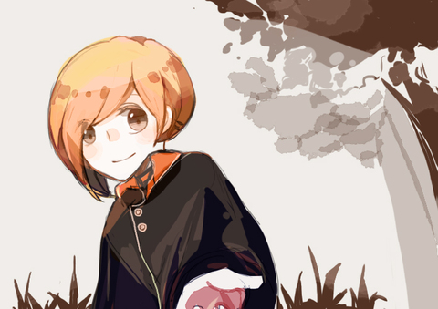

「……有名字的哦，前輩。」

所有畫面忽然猛朝她撲了過來，吞沒了所有聲音。
然後，她忽然站得住腳了。
風不吹，草不動了。
鈴緒上頭的鈴鐺卻慢半拍似地還微弱地響著，才逐漸恢復寧靜。
「喂，一等兵。」
將她的思緒驟然拴緊的，是穿過因濕氣而有些微涼的空氣，震響她耳膜的聲音。
「是？」
不是她的表情過於疑惑，就是回答的速度太慢半拍，惹來了對方一個白眼，「專注。」
她這才真正回過神。
她發現自己坐靠在賽錢箱旁，手腕上綁著一截斷掉的黑色綿線，在她身旁坐著一個抽抽搭搭不停哭泣的男孩。
而她的搭檔筆直挺挺地背對著她，一個縮步，夾帶著狠戾之氣朝前方橫斬了一刀。
不明的黑色氣息消散，空氣中窒息的感覺頓時好上許多。
然而，空氣中似乎還有一絲絲令人不適的違和感。
「呃、前輩？」該怎麼說，環顧四週慘不忍睹的景色，她覺得自己錯過了很重要的事。
「你做得很好。」對方顯然沒接受到她的疑問。
只見對方從容不迫地收刀，不慌不忙地轉過身，在她身旁蹲下後上下打量著男孩，
「沒事吧。」
「不，那個玖見前輩，我認為我有知道的必要。」忍受不了不停被無視，她小聲地抗議。
玖見系無聲地嘆息，「來的目的，妳還記得多少？」
玖見抬眼，翠綠的眸子暗沉了幾分，「剛才那些東西是怨念，為了尋找『替身』而來。」
「？」疑問的單音節落下同時，玖見微微拉高了黑線，迫使千蒔吊起了右手。
「啊。」理解的當下她忍不住點了點頭。
是不久前發生的片段，是為了救出在令人不適的氣氛中，察覺的那一絲純淨的氣息，以及『活物』的存在。
綁上黑線是為了不要『迷失』在裡頭，也為了找到和自己求救的聲音。
……
村裡失蹤的孩子們，被懲罰了。
在深山中迷路找不到回去的方向，餓了幾天，靠吃著果實和溪水維生。
被發現時是累得坐在地上、連哭也沒有聲音。
千蒔疑惑地眨了眨眼。
「被懲罰……該不會是——」話語一斷，她想到什麼一般倒抽了口氣。
千蒔顧不得自己已坐到雙腳發麻，迅速翻起身，湊到賽錢箱前。
雙手抓著封蓋，她一個使力。
早已破舊不堪的賽錢箱發出細微聲響，揚起的塵屑在悠悠的微弱日光下懸浮。
「啊。」千蒔輕呼，眼中閃過略略吃驚的情緒。
在箱中是一隻左腳骨折，早已死透的青色鳥兒。
歛下黑色眼眸，她神色複雜。
……剛剛就是你嗎？
或許是因為還處在屬於牠的情緒漩渦中，現在的她不知道該說什麼話才好。
腦海中浮現那個小小無助的身影。
寂寞的、怕被遺忘的，蜷縮在角落哭泣的孩子。
「孩子們的惡作劇。」玖見看著賽錢箱中的青鳥，低低地補充，
「粗魯地在腳上綁上了重物，受了傷。」
「是這個孩子打聽到牠被藏在這裡的。」玖見眼神掃過蹲在地上不停哭泣的男孩，惹怒了山靈、卻唯一沒事的孩子。
「……」千蒔正想說什麼，就見男孩癟著臉，眼中的淚光在眼眶中打轉，極努力地不讓自己哭出來。
因為面對自己，或許某種程度上，遠比其他事物都還來的可怕。
「嗚……對不起，對不起。」
小小的男孩將手輕攀在賽錢箱旁，惡作劇時他是在現場的。
——一個溫順、安靜、害怕地待在角落的旁觀者。
豆大的淚珠從緊緊閉起的眼中不停滑落，對他來說屍體是恐怖的、冰冷僵硬的觸感陌生的就像是會將自己也結凍一般。
明明是很害怕的，明明手還顫抖不已，明明連抓緊衣角的指節都微微泛白了。
但是男孩還是輕輕捧起了那隻死鳥。
「——對不起，青鳶。」
沒事了，我找到你了。
她呼了一口氣，在男孩說話的同時，最後一絲在賽錢箱中的違和感也消除了。
——你會經歷兩次死亡。
一次是你的呼吸停止之時，
而第二次……是你的名字最後被呼喚。
「看來，你沒有被忘記呢。」她微微揚起了嘴角。
他們將青鳶好好的安葬了，是在當初孩子們一起吃果子的樹下。
橘黃色的草在風中搖曳，金黃的日光斜斜地打了下來，像是在打招呼一樣。
他們順利將在山中迷路的孩子們帶回了村莊，接受了老婦人的道謝。
……當然，還有孩子們嚎啕大哭的道歉。
找不到路回去的恐懼，他們大概也體會到了。
而那個帶領惡作劇的孩子發了高燒，扭傷了腳。
然而是誰做的，玖見又是如何找到那些孩子們的，沒有人明說，也沒有人點破。
風吹得有些涼了，千蒔將披風扣上。
「還真是、十分善良啊。」低低地這樣說著，她沒有看向玖見只是甩玩著自己的仕込笛。
玖見只是瞥了她一眼。
在青鳶的回憶裡，只有被遺忘的恐懼，以及重新返回孤獨的寂寞。
然而對於惡作劇的孩子們，卻隻字不提。
「妳聽見了牠的聲音。」玖見平淡地敘述，「怎麼做到的？」
難得被前輩提問，是個讓前輩對自己刮目相看的好機會。
然而她只是聳肩，開口，「就只是聽得到而已。」
沒有多說，也沒有迴避。反倒是文不對題地接著回答了。
「不過我可是，不小心就記住了前輩的名字了哦。」
「還真是不勝感激。」
聞言她笑出聲，站定腳步，深吸了口氣。
「我覺得啊，果然能被記得是件很棒的事。」像是能夠收藏靈魂存在的痕跡一樣。
「無法忘記也是還挺困擾的，一等兵。」
一等兵、一等兵的。千蒔不免不滿地提醒。
「……有名字的哦，前輩。」
「是啊，挺長挺麻煩的啊。」
「是——千——蒔——」
「啊啊。」
「……前輩，再怎麼說無視對方的發言都太失禮了。」
「得讓腦袋充分發揮它的作用。」儲存有用的東西之類的。
聽出了弦外之音，千蒔正想回嘴，卻聽見了什麼聲音回頭。
漸漸入夜的山籠罩在雲層中，空蕩蕩的似乎只要大喊一聲就有回音迴盪。
「跟上，一等兵。」
「好好叫人的名字啊，千蒔千蒔千蒔——」不滿地握拳喊了回去。
「……」她看了山林最後一眼，輕巧地落下一句，「晚安，掰掰。」
轉身朝前輩的方向跑去。
——異聞二（完）